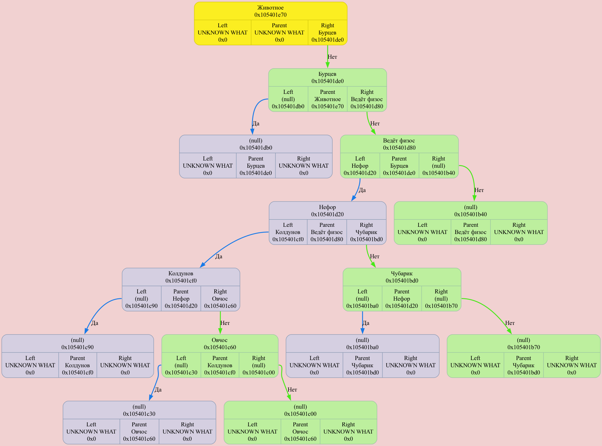

Colors meanings:
Binary Tree[0x16d5bb1e0] born at "/Users/anatolij/Documents/GitHub/Akinator/source/main.cpp": 8, name 'tree'
left subtree node
⮑ left subtree edge
right subtree node
⮑ right subtree edge
root node
new node
DUMP #1: function Start was called from /Users/anatolij/Documents/GitHub/Akinator/source/main.cpp: 12

Binary Tree[0x102858360] born at "(null)": 0, name '(null)'
DUMP #2: function IN PROCESS was called from /Users/anatolij/Documents/GitHub/Akinator/source/Akinator_base.cpp: 9

Binary Tree[0x102858360] born at "(null)": 0, name '(null)'
DUMP #3: function IN PROCESS was called from /Users/anatolij/Documents/GitHub/Akinator/source/Akinator_base.cpp: 9

Binary Tree[0x102858360] born at "(null)": 0, name '(null)'
DUMP #4: function IN PROCESS was called from /Users/anatolij/Documents/GitHub/Akinator/source/Akinator_base.cpp: 9

Binary Tree[0x102858360] born at "(null)": 0, name '(null)'
DUMP #5: function IN PROCESS was called from /Users/anatolij/Documents/GitHub/Akinator/source/Akinator_base.cpp: 9

Binary Tree[0x102858360] born at "(null)": 0, name '(null)'
DUMP #6: function IN PROCESS was called from /Users/anatolij/Documents/GitHub/Akinator/source/Akinator_base.cpp: 9

Binary Tree[0x102858360] born at "(null)": 0, name '(null)'
DUMP #7: function IN PROCESS was called from /Users/anatolij/Documents/GitHub/Akinator/source/Akinator_base.cpp: 9

Binary Tree[0x102858360] born at "(null)": 0, name '(null)'
DUMP #8: function IN PROCESS was called from /Users/anatolij/Documents/GitHub/Akinator/source/Akinator_base.cpp: 9

Binary Tree[0x102858360] born at "(null)": 0, name '(null)'
DUMP #9: function IN PROCESS was called from /Users/anatolij/Documents/GitHub/Akinator/source/Akinator_base.cpp: 9

Binary Tree[0x102858360] born at "(null)": 0, name '(null)'
DUMP #10: function IN PROCESS was called from /Users/anatolij/Documents/GitHub/Akinator/source/Akinator_base.cpp: 9

Binary Tree[0x102858360] born at "(null)": 0, name '(null)'
DUMP #11: function IN PROCESS was called from /Users/anatolij/Documents/GitHub/Akinator/source/Akinator_base.cpp: 9

Binary Tree[0x102858360] born at "(null)": 0, name '(null)'
DUMP #12: function IN PROCESS was called from /Users/anatolij/Documents/GitHub/Akinator/source/Akinator_base.cpp: 9

Binary Tree[0x102858360] born at "(null)": 0, name '(null)'
DUMP #13: function IN PROCESS was called from /Users/anatolij/Documents/GitHub/Akinator/source/Akinator_base.cpp: 9

Binary Tree[0x102858360] born at "(null)": 0, name '(null)'
DUMP #14: function IN PROCESS was called from /Users/anatolij/Documents/GitHub/Akinator/source/Akinator_base.cpp: 9

Binary Tree[0x102858360] born at "(null)": 0, name '(null)'
DUMP #15: function IN PROCESS was called from /Users/anatolij/Documents/GitHub/Akinator/source/Akinator_base.cpp: 9

Binary Tree[0x102858360] born at "(null)": 0, name '(null)'
DUMP #16: function IN PROCESS was called from /Users/anatolij/Documents/GitHub/Akinator/source/Akinator_base.cpp: 9

Binary Tree[0x16d5bb1e0] born at "/Users/anatolij/Documents/GitHub/Akinator/source/main.cpp": 8, name 'tree'
DUMP #17: function End was called from /Users/anatolij/Documents/GitHub/Akinator/source/main.cpp: 14